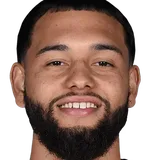

His best final NBA finish was #5 of 30, with the 2016-17 Houston Rockets. In his 186 games for 4 teams over 4 seasons they went 78–108 (41.9%), −30 games under .500, with an average final finish of 15.2.
Jump to: Record by opponent · Season by season · Teammate help
Compare Tyler Ennis with…
Final NBA finish, season by season
Title Finals Other playoffs Missed playoffs. #1 = champion; the dashed line is last place that season. Each point opens that season's final standings.
All 30 teams ranked in 2016-17, his best finish (#5)Teammate help
 James Harden5.01 season
James Harden5.01 season Patrick Beverley1.01 season
Patrick Beverley1.01 season Eric Gordon0.51 season
Eric Gordon0.51 season
Career
Career records (W–L, W − L, with and without) include 2026-27 games through Nov. 23, 2026; season counts and finishes are through 2025-26. Each card opens its board in the same scope. How we count.

Latest completed seasons
Season by season
Newest first; every header sorts. Final NBA finish is the team's rank among all teams that season (#1 = champion) and opens that season's standings. "Without him" uses the team-season window; the span line counts only the games between his first and last game for the team.
| 2017-18 | #21 of 30 | 35–47 42.7% | Missed playoffs | 54 of 82 | 22–32 40.7% | 13–15 46.4%span: 13–15, gap −5.7 | −5.7 | |
| 2016-17 | #5 of 30 | 55–27 67.1% | Lost conf semis 2–4 | 31 of 82 | 22–9 71.0% | 20–9 69.0%span: 18–8, gap +1.7 | +2.0 | |
| 2016-17 | #28 of 30 | 26–56 31.7% | Missed playoffs | 22 of 82 | 6–16 27.3% | 1–3 25.0%span: 1–0, gap −72.7 | +2.3 | |
| 2015-16 | #21 of 30 | 33–49 40.2% | Missed playoffs | 46 of 82 | 17–29 37.0% | 16–20 44.4%span: 15–17, gap −9.9 | −7.5 | |
| 2014-15 | #18 of 30 | 39–43 47.6% | Missed playoffs | 8 of 82 | 3–5 37.5% | 26–20 56.5%span: 25–16, gap −23.5 | −19.0 | |
| 2014-15 | #14 of 30 | 41–41 50.0% | Lost 1st round 2–4 | 25 of 82 | 8–17 32.0% | 8–2 80.0%span: 3–1, gap −43.0 | −48.0 |
On/off, starts and close games
From the lineup data, 1996-97 on. On/off is net points per 100 possessions with him on the floor minus off, a different unit from the win-rate gaps. Started and off the bench are team records in those games; close games are those within 5 points in the last 5 minutes with him on the floor.
Teammate help by season
Help this season = Teammates Score points for honors won that season by teammates who shared a game with him, with every teammate that adds to it. Only honors won in that same season count. How help works.
- 2017-18
 LA Lakers
LA Lakers
 Kyle Kuzma All-Rookie 1st0.2550 g
Kyle Kuzma All-Rookie 1st0.2550 g Lonzo Ball All-Rookie 2nd0.12530 g
Lonzo Ball All-Rookie 2nd0.12530 g
Help this season: 0.375 = 0.25 Kyle Kuzma + 0.125 Lonzo Ball
Other teammates (no honors that season): Julius Randle 54 g, Brook Lopez 49 g, Kentavious Caldwell-Pope 48 g, Josh Hart 42 g, Brandon Ingram 35 g, Ivica Zubac 33 g, Jordan Clarkson 32 g, Corey Brewer 30 g, Alex Caruso 28 g, Larry Nance Jr 28 g, Travis Wear 13 g, Thomas Bryant 13 g, Andrew Bogut 12 g, Gary Payton II 11 g and 7 more
- 2016-17
 Houston
James Harden All-NBA 1stAll-Star531 gPatrick Beverley All-Def 1st117 gEric Gordon Sixth Man0.529 g
Houston
James Harden All-NBA 1stAll-Star531 gPatrick Beverley All-Def 1st117 gEric Gordon Sixth Man0.529 g
Help this season: 6.5 = 5 James Harden + 1 Patrick Beverley + 0.5 Eric Gordon
Other teammates (no honors that season): Trevor Ariza 31 g, Corey Brewer 31 g, Sam Dekker 31 g, Ryan Anderson 29 g, KJ McDaniels 28 g, Nenê 25 g, Clint Capela 24 g, Montrezl Harrell 24 g, Bobby Brown 17 g, Kyle Wiltjer 8 g, Chinanu Onuaku 2 g
- 2016-17LA Lakers
 Brandon Ingram All-Rookie 2nd0.12519 g
Brandon Ingram All-Rookie 2nd0.12519 g
Help this season: 0.125 = 0.125 Brandon Ingram
Other teammates (no honors that season): Julius Randle 22 g, Jordan Clarkson 22 g, Corey Brewer 22 g, Larry Nance Jr 22 g, Tarik Black 19 g, David Nwaba 19 g, D'Angelo Russell 19 g, Thomas Robinson 14 g, Ivica Zubac 13 g, Nick Young 7 g, Metta World Peace 7 g, Luol Deng 1 g, Timofey Mozgov 1 g
- 2015-16
 MilwaukeeHelp this season: 0, no honored teammate
MilwaukeeHelp this season: 0, no honored teammate - 2014-15
 PhoenixHelp this season: 0, no honored teammate
PhoenixHelp this season: 0, no honored teammate - 2014-15MilwaukeeHelp this season: 0, no honored teammate
Record against each opponent
Regular season, through 2025-26 (2026-27 games not included): 186 games, 78–108, against 30 franchises.
Grouped by franchise (named as today); game lists keep each team's name that season. Filters and the tab are kept in the URL, so a filtered view can be shared.
| Games list | |||||||
|---|---|---|---|---|---|---|---|
| 10 | 5–5 | 50.0% | 0 | N/A | 2014-15 to 2017-18 | ||
| 8 | 7–1 | 87.5% | +6 | N/A | 2016-17 to 2017-18 | ||
| 8 | 3–5 | 37.5% | −2 | N/A | 2014-15 to 2017-18 | ||
| 8 | 4–4 | 50.0% | 0 | N/A | 2014-15 to 2017-18 | ||
| 8 | 3–5 | 37.5% | −2 | N/A | 2015-16 to 2017-18 | ||
| 8 | 2–6 | 25.0% | −4 | N/A | 2014-15 to 2017-18 | ||
| 8 | 0–8 | 0.0% | −8 | N/A | 2014-15 to 2017-18 | ||
| 7 | 3–4 | 42.9% | −1 | N/A | 2014-15 to 2017-18 | ||
| 7 | 3–4 | 42.9% | −1 | N/A | 2014-15 to 2017-18 | ||
| 7 | 4–3 | 57.1% | +1 | N/A | 2014-15 to 2017-18 | ||
| 7 | 6–1 | 85.7% | +5 | N/A | 2014-15 to 2016-17 | ||
| 7 | 6–1 | 85.7% | +5 | N/A | 2015-16 to 2017-18 | ||
| 6 | 1–5 | 16.7% | −4 | N/A | 2014-15 to 2017-18 | ||
| 6 | 5–1 | 83.3% | +4 | N/A | 2014-15 to 2017-18 | ||
| 6 | 2–4 | 33.3% | −2 | N/A | 2015-16 to 2017-18 | ||
| 6 | 0–6 | 0.0% | −6 | N/A | 2014-15 to 2016-17 | ||
| 6 | 0–6 | 0.0% | −6 | N/A | 2014-15 to 2017-18 | ||
| 6 | 2–4 | 33.3% | −2 | N/A | 2015-16 to 2017-18 | ||
| 6 | 5–1 | 83.3% | +4 | N/A | 2014-15 to 2017-18 | ||
| 6 | 1–5 | 16.7% | −4 | N/A | 2014-15 to 2017-18 | ||
| 6 | 4–2 | 66.7% | +2 | N/A | 2016-17 to 2017-18 | ||
| 5 | 2–3 | 40.0% | −1 | N/A | 2014-15 to 2016-17 | ||
| 5 | 3–2 | 60.0% | +1 | N/A | 2014-15 to 2017-18 | ||
| 5 | 1–4 | 20.0% | −3 | N/A | 2015-16 to 2017-18 | ||
| 5 | 1–4 | 20.0% | −3 | N/A | 2014-15 to 2017-18 | ||
| 5 | 2–3 | 40.0% | −1 | N/A | 2015-16 to 2017-18 | ||
| 4 | 1–3 | 25.0% | −2 | N/A | 2015-16 to 2017-18 | ||
| 4 | 0–4 | 0.0% | −4 | N/A | 2016-17 to 2017-18 | ||
| 3 | 1–2 | 33.3% | −1 | 0–1 (0–1 in games) | 2014-15 to 2017-18 | ||
| 3 | 1–2 | 33.3% | −1 | N/A | 2016-17 to 2017-18 |
Rows add up to his career record in his games. A playoff series counts when he played in it; early round-robin games show as games only. How we count.
Playoffs, with and without him
Arrival and departure
Team wins per 82 games the season before he arrived vs his first season there, and his last season vs the season after he left. He leaves a team only when his next season with games is for another team (or he never plays again); whole seasons he missed and came back from are one "Missed" row with the team's record without him. Per 82 so short seasons compare fairly. These are team records, not a measure of what he did.
| Left | after 2017-18 | 2017-18: 35–47 35.0 per 82 | 2018-19: 37–45 37.0 per 82 without him | +2.0 wins | |
| Left | after 2016-17 | 2016-17: 55–27 55.0 per 82 | 2017-18: 65–17 65.0 per 82 without him | +10.0 wins | |
| Arrived | 2016-17 | 2015-16: 41–41 41.0 per 82 | 2016-17: 55–27 55.0 per 82 | +14.0 wins | |
| Arrived | 2016-17 | 2015-16: 17–65 17.0 per 82 | 2016-17: 26–56 26.0 per 82 | +9.0 wins | |
| Left | after 2015-16 | 2015-16: 33–49 33.0 per 82 | 2016-17: 42–40 42.0 per 82 without him | +9.0 wins | |
| Left | after 2014-15 | 2014-15: 39–43 39.0 per 82 | 2015-16: 23–59 23.0 per 82 without him | −16.0 wins | |
| Debut | 2014-15 | 2013-14: 48–34 48.0 per 82 | 2014-15: 39–43 39.0 per 82 | −9.0 wins | |
| Arrived | 2014-15 | 2013-14: 15–67 15.0 per 82 | 2014-15: 41–41 41.0 per 82 | +26.0 wins |
Seasons split between teams
Each team's record before his first game for it, inside his window (games with and without him) and after his last game, in the seasons he played for two or more teams.
Best duos
Team record in regular-season games both played, top 10 by win %, at least 50 games together.
 Corey Brewer
39–44 47.0%
Corey Brewer
39–44 47.0%- Brandon Ingram
23–31 42.6%
- Kyle Kuzma
21–29 42.0%
 Jerryd Bayless
19–31 38.0%
Jerryd Bayless
19–31 38.0% Julius Randle
28–48 36.8%
Julius Randle
28–48 36.8% Khris Middleton
25–43 36.8%
Khris Middleton
25–43 36.8% Larry Nance Jr
18–32 36.0%
Larry Nance Jr
18–32 36.0% Jordan Clarkson
19–35 35.2%
Jordan Clarkson
19–35 35.2% Giannis Antetokounmpo
24–45 34.8%
Giannis Antetokounmpo
24–45 34.8% John Henson
20–39 33.9%
John Henson
20–39 33.9%
With and without his teammates
His 12 teammates with the most regular-season games together. "Together" is the team's record in the games both played for it; "Without him" is the team's record in the games Tyler Ennis played for that team while the teammate was on it (between the teammate's first and last game for the team, the appearance span) and the teammate did not play. Fewer than 20 games without him: no gap. Games through Nov. 23, 2026. How we count.
- Corey BrewerHouston 2016-17; LA Lakers 2016-17 to 2017-18
- Together
- 39–44 47.0%
- Without him
- 4–1 80.0%
- Gap
- Too few games without him
- Julius RandleLA Lakers 2016-17 to 2017-18
- Together
- 28–48 36.8%
- Without him
- N/A N/A
- Gap
- Too few games without him
- Giannis AntetokounmpoMilwaukee 2014-15 to 2015-16
- Together
- 24–45 34.8%
- Without him
- 1–1 50.0%
- Gap
- Too few games without him
- Khris MiddletonMilwaukee 2014-15 to 2015-16
- Together
- 25–43 36.8%
- Without him
- 0–3 0.0%
- Gap
- Too few games without him
 Miles PlumleeMilwaukee 2014-15 to 2015-16; Phoenix 2014-15
Miles PlumleeMilwaukee 2014-15 to 2015-16; Phoenix 2014-15- Together
- 23–45 33.8%
- Without him
- 4–6 40.0%
- Gap
- Too few games without him
- John HensonMilwaukee 2014-15 to 2015-16
- Together
- 20–39 33.9%
- Without him
- 5–7 41.7%
- Gap
- Too few games without him
- Brandon IngramLA Lakers 2016-17 to 2017-18
- Together
- 23–31 42.6%
- Without him
- 3–12 20.0%
- Gap
- Too few games without him
- Jordan ClarksonLA Lakers 2016-17 to 2017-18
- Together
- 19–35 35.2%
- Without him
- N/A N/A
- Gap
- Too few games without him
- Kyle KuzmaLA Lakers 2017-18
- Together
- 21–29 42.0%
- Without him
- 0–1 0.0%
- Gap
- Too few games without him
- Jerryd BaylessMilwaukee 2014-15 to 2015-16
- Together
- 19–31 38.0%
- Without him
- 4–9 30.8%
- Gap
- Too few games without him
- Larry Nance JrLA Lakers 2016-17 to 2017-18
- Together
- 18–32 36.0%
- Without him
- 1–3 25.0%
- Gap
- Too few games without him
 Brook LopezLA Lakers 2017-18
Brook LopezLA Lakers 2017-18- Together
- 22–27 44.9%
- Without him
- 0–5 0.0%
- Gap
- Too few games without him